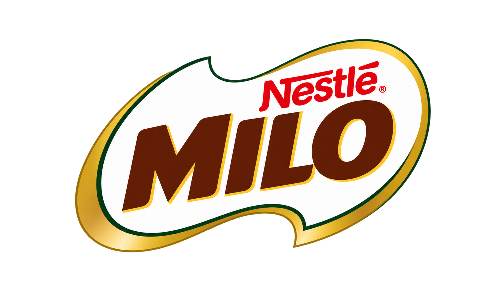

Cocoa, malt and milk — the three that have powered Nigerian mornings for generations.
Every tin supports grassroots sport in communities across the country.
From school pitches to national colours — the same green tin at the start of it.
A touch of cocoa for that deep, unmistakable chocolate taste.
Barley, carefully malted — where MILO gets its energy and its name.